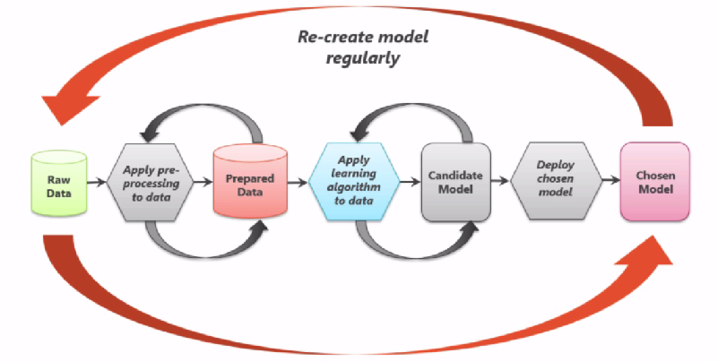
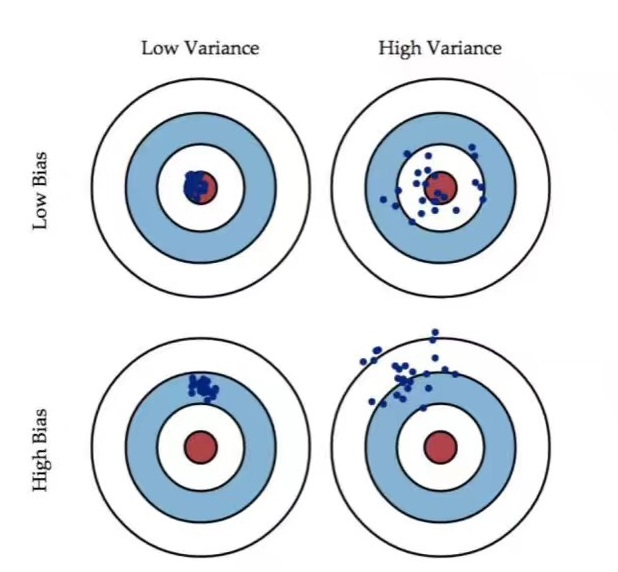
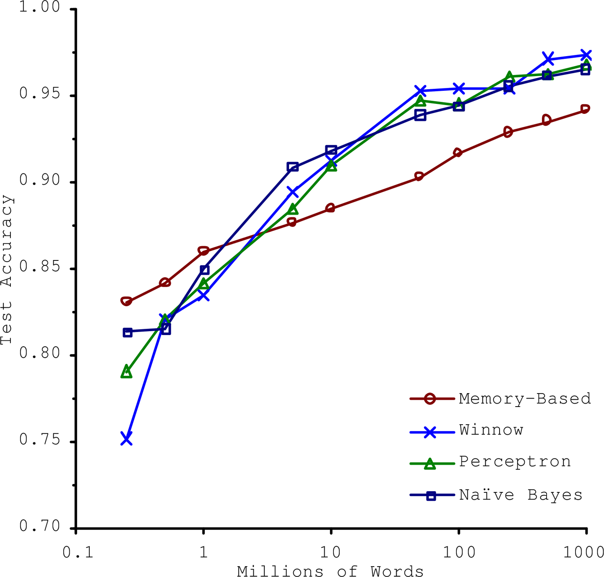
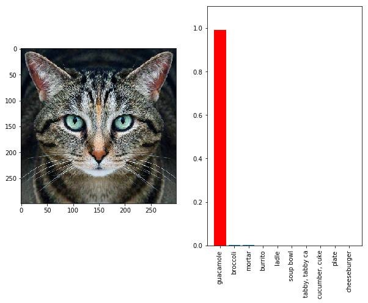
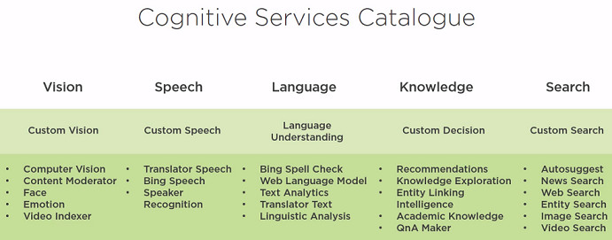
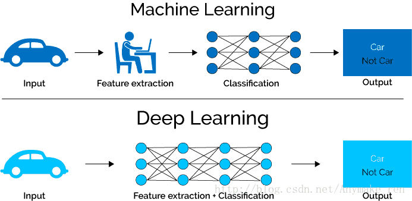

Machine Learning Basic¶
This blog introduces the basic knowledge of machine learning. The details of algorithm and programming will come in later blogs. Machine learning is a technology which can resolve the computational problem without programming specifically.
Contents
Process¶
Machine learning project has its own process, which starts with asking the right questions.
Ask yourself: Do you have the right data to answer the question?
Ask yourself: Do you know how you’ll measure success?
The process also includes re-create model regularly, see following picture.
People are highly involved in the iteration of machine learning, e.g. adjusting algorithm, training data, selected features, parameters to algorithm.
CRISP-cycle¶
Cross-industry standard process for data mining, also known as CRISP-DM. It is also very relevant to machine learning projects.
Business understanding
Data understanding
Data preparation
Modeling
Evaluation
Deployment
Learning Algorithm Overview¶
The data contains the pattern, the algorithm find the patterns, and the trained model can recognizes the patterns.
Supervised Learning¶
The value you want to predict is in the training data. The data is labeled.
Supervised Learning includes the following algorithms:
K-Nearest neighbors
Linear regression
Logistic regression (sigmoid function, one-versus-all (OvA) strategy or one-versus-the-rest, one-versus-one (OvO) strategy)
Support vector machines (SVMs)
Decision trees and random forests
Neural network
Unsupervised Learning¶
The value you want to predict is not in the training data. The data is unlabeled.
Unsupervised Learning includes the following algorithms:
Clustering¶
Example question: What are our customer segments?
k-means
Hierarchical cluster analysis (HCA)
Expectation maximization
Visualization and dimensionality reduction¶
Principal component analysis (PCA)
Kernel PCA
Locally-Linear embedding (LLE)
t-distributed stochastic neighbor embedding (t-SNE)
In machine learning, kernel methods are a class of algorithms for pattern analysis, whose best known member is the support vector machine (SVM). The general task of pattern analysis is to find and study general types of relations (for example clusters, rankings, principal components, correlations, classifications) in datasets. In its simplest form, the kernel trick means transforming data into another dimension that has a clear dividing margin between classes of data. For many algorithms that solve these tasks, the data in raw representation have to be explicitly transformed into feature vector representations via a user-specified feature map: in contrast, kernel methods require only a user-specified kernel, i.e., a similarity function over pairs of data points in raw representation.
To simplify the data without losing too much information, one way to do this is to merge several correlated features into one => feature extraction
Linear Discriminant Analysis: characterizes or separates two or more classes of objects or events. The resulting combination may be used as a linear classifier, or more commonly, for dimensionality reduction before later classification.
Association rule learning¶
Association rule learning is a rule-based machine learning method for discovering interesting relations between variables in large databases. It is intended to identify strong rules discovered in databases using some measures of interestingness. This rule-based approach also generates new rules as it analyzes more data. The ultimate goal, assuming a large enough dataset, is to help a machine mimic the human brain’s feature extraction and abstract association capabilities from new uncategorized data.
Apriori: It proceeds by identifying the frequent individual items in the database and extending them to larger and larger item sets as long as those item sets appear sufficiently often in the database.
Eclat
Unsupervised learning is also used on Anomaly detection use cases, e.g. distributed Gaussian.
Semi-supervised learning¶
Semi-supervised learning is a class of machine learning tasks and techniques that also make use of unlabeled data for training – typically a small amount of labeled data with a large amount of unlabeled data.
Deep belief networks (DBN)： Based on unsupervised components called restricted Boltzmann machines(RBMs). Deep belief network (DBN) is a generative graphical model, or alternatively a class of deep neural network, composed of multiple layers of latent variables (“hidden units”), with connections between the layers but not between units within each layer.
Reinforcement learning¶
Reinforcement learning (RL) is an area of machine learning concerned with how software agents ought to take actions in an environment so as to maximize some notion of cumulative reward.
Agent can observe the environment, select and perform actions and get rewards in return. It must then learn by itself what is the best strategy, called a policy to get the most reward over time.
Other algorithms¶
Batch learning¶
The system is incapable of learning incrementally: it must be trained using all the available data. It can also be called offline learning. Retrain the model if necessary.
Online learning¶
The system is trained incrementally by feeding it data instances sequentially, either individually or by small groups called mini-batches or out-of-core learning, incremental learning.
Learning rate: how fast they should adapt to changing data.
Instance based vs Model based learning¶
Instance based learning: the system learns the examples by heart, then generalizes to new cases using a similarity measure. Instance based learning is a family of learning algorithms that, instead of performing explicit generalization, compares new problem instances with instances seen in training, which have been stored in memory.
Model based: to build a model first.
Accuracy and Precision¶
There is no surprise for Machine Learning projects, one of the goal is to achieve high enough accuracy.
The following picture explains the difference between Accuracy and Precision well.
High variance: is normally overfitting problem
High bias: is normally underfitting problem
Utility function or fitness function¶
Untility function measures how good your model is or you can define a cost function that measures how bad it is. Cost function applies on training set, gradient descent, used in regression. Alternative option of gradient descent is Stochastic Gradient Descent (SGD) classifier.
Regularization¶
Overfit: resolved by regulation, by reducing number of theta (degree of polynomial).
The amount of regularization to apply during learning can be controlled by a hyperparameter. A hyperparameter is a parameter of a learning algorithm (not of the model).
Measurement¶
Root mean square error (RMSE): measures the standard deviation
Mean Absolute Error (MAE)
The higher the norm index, the more it focuses on large values and neglects small ones. This is why the RMSE is more sensitive to outlier than the MAE.
Precision = TP/TP+FP
Recall = TP/TP+FN
If someone says ‘let’s reach 99% precision’, you should ask, ‘at what recall’.
F1 score is useful for skewed class. F1 = 2*P*R/(P+R)
ROC (receiver operating characteristic) curve is a measure of binary classifier. The ROC curve is created by plotting the true positive rate (TPR) against the false positive rate (FPR) at various threshold settings. Measure ROC AUC (area under the curve)
Break-Even point P = R
K-folds cross-validation¶
3 dataset: train set, cross-validation set, test dataset.
Accuracy is generally not the preferred performance measure for classifiers, especially when you are dealing with skewed datasets.
A much better way to evaluate the performance of a classifier is to look at the confusion matrix.
Cost matrix: Cost matrix is similar to the confusion matrix except the fact that we are calculating the cost of wrong prediction or right prediction. In different context, the cost of error will be different.
Training and test dataset need to ensure data distribution is consistent, to avoid the data distributed not evenly and impact the final results. stratified sampling
Data Amount¶
The amount of data is also important for accuracy.
Drawbacks¶
Here’s a picture of a cat right? Google’s Inception model thinks it’s a guacamole. As much as the image looks like a cat, the image is digitally altered which confused the model.

Slightly rotating the image led the model to correctly classify the image as a cat (and as an animal)
The above image is what’s called as an adversarial image, trying to fool your model into thinking the image is something you want it to be instead of what the image actually is.
We have many technologies that allow us to use AI/ML (and not just deep learning) as a blackbox. The real danger is in the application, especially in healthcare and defense. For example, how would you convince that your model for predicting cancer actually works? How do you know your model is not susceptible to noise? How do you know that your model has actually learnt what it is supposed to be learning? How do you actually read interpretability here? If you can’t interpret what the model has learnt, then you can’t sell it.
Another case can be found here:
But the questions to be asked are:
How would you now ensure that the results be consistent in application, without posing any vulnerabilities or risk?
Did you really need a AI/ML solution?
If you can’t explain it simply, you don’t understand it well enough. - Albert Einstein
Others¶
The good news is there is no need for you to build everything from scrach. You can use cloud machine learning services out-of-box.
Cloud machine learning services¶
Azure Cognitive Services: Pattern recognition-as-a-Service
Deep learning¶
Will explain the details of deep learning in later blogs.
With the increasing data especially reach some amount, the deep learning algorithm will have better performance than machine learning.

Normally, machine learning needs human being to be involved to extract features rely on human experience. However deep learning consists of several layers. They combine simpler models together and pass data from one layer to another to build up a complicated model.
Written by Binwei@Singapore